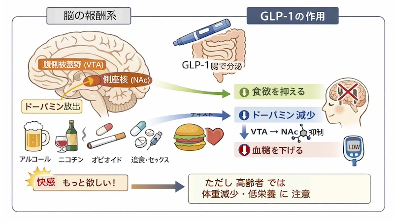

トップページに戻る
公開日：2026年6月｜最終更新：2026年6月
アルコール依存は単なる習慣ではなく、脳の報酬系に関わる神経生物学的な現象です。
高齢者では代謝低下や脆弱性の増加により、その影響はより顕著になります。
ここでは、専門的になりますが、依存症が起こる機構を解説し、抗肥満薬GLP-1薬の可能性についても言及します。
１）報酬系とドーパミン（専門的）
コラム：中脳辺縁系（Mesolimbic pathway）
腹側被蓋野（VTA）から側坐核（NAc）へのドーパミン投射が、
快感や動機づけに関与しています。
アルコールはこの経路を活性化し、「もっと欲しい」という行動を強化します。
長期的にはドーパミン受容体（特にD2受容体）のダウンレギュレーションが起こり、
快感閾値の上昇と依存の固定化が生じます。
２）GLP-1と中枢神経作用
GLP-1（グルカゴン様ペプチド-1）は腸管L細胞から分泌されるホルモンで、
血糖調節に加え、中枢神経系にも作用します。
現在は、この作用を模造したGLP-1受容体作動薬が、糖尿病や肥満の治療に利用されています。
コラム：GLP-1の神経作用
- 視床下部に作用し食欲を抑制
- VTAおよび側坐核におけるドーパミン放出の調節
- 報酬価値（reward salience）の低下
GLP-1薬を用いた動物実験および一部の臨床研究では、
アルコール摂取量や嗜好性の低下が報告されています。

３）依存症全体への応用可能性
コラム：現時点の理解
- アルコール：一定の有効性が示唆される
- ニコチン：限定的なデータ
- オピオイド：前臨床段階が中心
- 過食：比較的エビデンスが蓄積
GLP-1薬は「報酬系の働きを調節する薬」としての可能性が期待されていますが、
現時点では、依存症全般に対する標準治療には至っていません。
４）高齢者におけるリスク
コラム：臨床上の注意点
- 食欲低下によるエネルギー摂取不足
- 体重減少 → サルコペニア進行
- フレイル・転倒リスク増加
特にBMIが低い高齢者では、GLP-1薬の使用は慎重な判断が必要です。
５）まとめ
アルコール依存は中脳辺縁系のドーパミン神経によって強化される神経適応の結果です。
GLP-1はこの報酬系に介入する新しい治療標的として注目されています。
ただし、高齢者では、体重減少や低栄養のリスクがあるため、栄養状態とのバランスを考慮した慎重な対応が重要です。
要点
「報酬系の制御」と「身体機能の維持」の両立が、
高齢者医療における鍵となります。
参考文献を読む前に
このページで紹介している内容は、医学や脳科学の研究に基づいています。
ただし、参考文献の多くは専門家向けに書かれており、
すべてを詳しく理解する必要はありません。
大切なポイントは、「アルコールは脳の働きに影響する」、
「アルコールは脳の仕組みによってやめにくくなること」、
そして「GLP-1はその欲求に関係する可能性がある」という点です。
気になる部分だけを拾い読みしたり、
「どのような研究があるのか」を知るだけでも十分です。
参考文献
- World Health Organization. Global status report on alcohol and health（アルコールの健康影響を総括的に解説）
- National Institute on Drug Abuse. Drugs, Brains, and Behavior: The Science of Addiction（ドーパミン・報酬系の解説）
- Drucker DJ. Mechanisms of Action and Therapeutic Application of GLP-1, Cell Metabolism. 2018（GLP-1と肥満・食欲（総説））
- 厚生労働省 高齢者の健康づくり・栄養に関する資料（高齢者とフレイル）
トップページに戻る